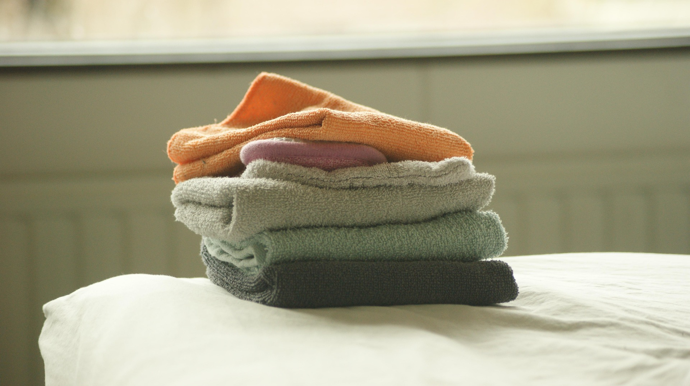
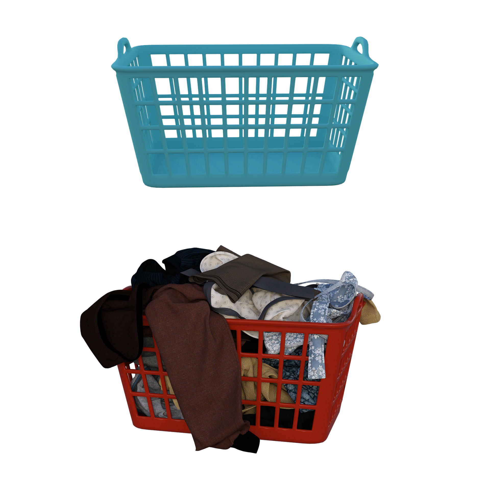

Our wash and fold services are very popular amongst those customers that lead very busy lives and need the convenience of their laundry being done efficiently.
Washing: Your clothes are washed using high-quality detergents and settings tailored to the fabric type.
Drying: After washing, the clothes are dried in commercial dryers, ensuring they are thoroughly dried without damage.
Folding: Once dried, the clothes are neatly folded and packaged, ready for you to put away.

Drop Off and Pick Up

Our Laundry drop-off and you pick up services offer a convenient solution
for managing all of your laundry needs. These services typically involve the
following steps:
1. Scheduling a Pickup: You can schedule a pickup time that suits your convenience, either through a website or contact us via phone.
2. Drop-off: You leave your laundry at a our Laundromat on 220 South Center Street Orange, NJ 07050.
3. Cleaning Process: Our laundry service washes, dries, and folds your clothes, often using high-quality and eco-friendly cleaning products.